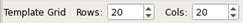

Template Tab
To access: From a Calibre WORKbench menu bar, Litho > Calibre LSG Layout Generation, or from a Calibre WORKbench Tcl shell call—see “Invoking Calibre LSG from a Tcl Shell Call”.
Click the Template tab.
Use this tab to predefine Calibre LSG unit pattern positions in a layout clip template file.
Description
Objects
Object |
Description |
|---|---|
A |
Template File pane — Use to perform template file and pattern actions. Definitions (left to right):
|
B |
Template Grid pane — Use to perform unit cell placement on a grid and create and display a template. Definitions (left to right): 
|
C |
Unit Cells pane — Use to define and drag‑select unit cells for placement in the Template Grid. Definitions (top to bottom):
|
D |
Position pane — Display position, unit pattern definition, and delete (clear) icon. |
E |
Reference pane — Show the active template information. |
Usage Notes
For a description of the file formats and argument options used for imported files see “calibre -lsg” and “Calibre LSG File Formats”.